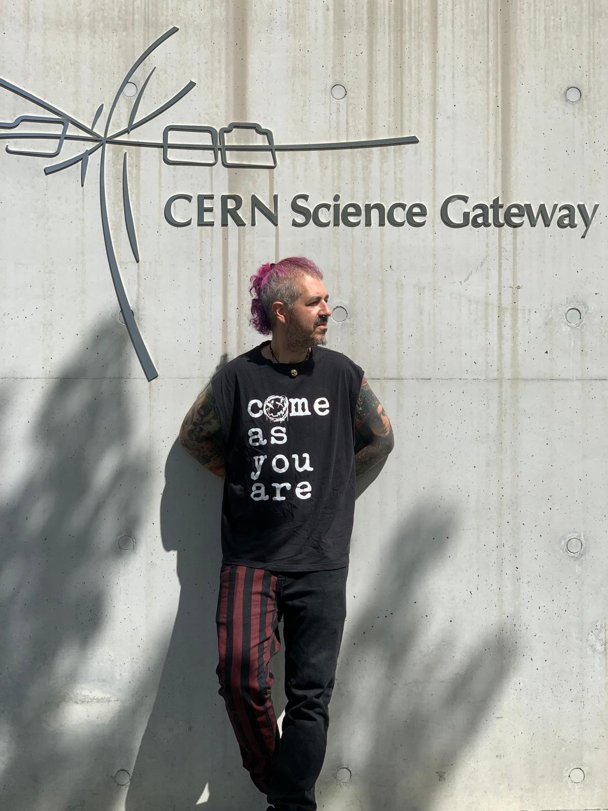
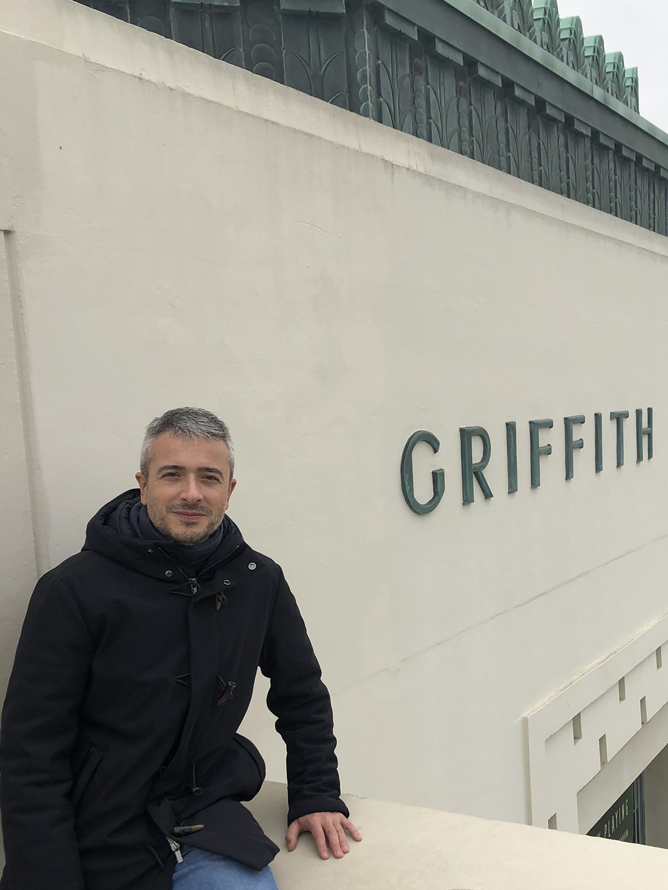

Il progetto
Astri Nascenti è un percorso educativo di astronomia osservativa e divulgativa dedicato a bambini e ragazzi dai 6 ai 14 anni. Attraverso l'osservazione diretta e attività guidate, il progetto favorisce la comprensione del cielo e dei suoi oggetti e stimola lo sviluppo delle capacità cognitive, collegando i concetti scientifici all'esperienza quotidiana degli studenti.
Per chi è Astri Nascenti
Astri Nascenti si rivolge alle scuole primarie e secondarie di primo grado. Le serate di osservazione si svolgono negli spazi aperti scolastici in collaborazione con gli insegnanti ed il coinvolgimento dei genitori. Gli studenti vengono guidati da astrofili appassionati ed esperti che mettono a disposizione telescopi e strumenti di osservazione per esplorare insieme il cielo notturno.
Il progetto è inoltre pensato per essere proposto anche a enti, associazioni, circoli e centri di aggregazione, adattandosi a diversi contesti educativi e culturali. L'obiettivo è quello di accendere la curiosità e scoprire il cielo dalla città come parte della propria esperienza quotidiana perché il cosmo è la nostra casa comune.
"Siamo polvere di stelle." — Carl Sagan
Serate osservative
Impareremo ad orientarci nel cielo notturno riconoscendo le principali costellazioni e osserveremo Luna, pianeti, nebulose e galassie grazie all'uso di telescopi e strumenti dedicati.
IL CIELO DEL MESE
Caricamento in corso...
Altro...Software consigliati
Moon Globe
Ottimo per esplorare la superficie lunare con mappe dettagliate e informazioni storiche sulle missioni.
Star Walk / Sky Tonight
Applicazioni ideali per le uscite serali: puntano il cielo in tempo reale e forniscono dati immediati su stelle e pianeti.
Stellarium
Software desktop e mobile: planetario virtuale professionale, ottimo per simulazioni e lezioni in aula.
Chi siamo

Mi chiamo Matteo e sono nato a Milano il 23 novembre 1980 alle 7 del mattino. Sagittario, cuspide, ascendente Sagittario. SPOILER, non si fanno oroscopi, qua si osserva il cielo. Per tutti, da sempre, sono Roger.
La passione per l'Astronomia nasce molto presto, da bambino, attraverso una piccola finestra del bagno dei miei nonni, quando osservavo con thauma la Luna piena, coltivando la segreta convinzione che quell'occhio luminoso appartenesse a qualche creatura mitologica nascosta nell'ombra. Da allora non ho mai smesso di alzare lo sguardo.
Dopo il liceo artistico e la laurea all'Accademia di Comunicazione Ateneo Creativo di Milano, ho lavorato per 26 anni nel mondo della stampa digitale e da 10 sono imprenditore con attività in diversi settori.
Nel 2017 ho fondato Astri Nascenti, progetto di osservazione guidata del cielo e divulgazione astronomica nato per le scuole primarie e secondarie, oggi aperto anche ad un pubblico più vasto. Con telescopi e strumenti smart accompagno appassionati e curiosi alla scoperta del cielo in modo coinvolgente e immersivo.
Ma ricordatevi sempre che sono un astrofilo, non un astronomo né un astrologo, e continuo a fare ciò che da bambino mi emozionava: guardare il cielo, farsi domande e raccontare l'Universo con stupore e un po' di spirito.
Per non rischiare di annoiarmi (ma questo soltanto di giorno) sono anche cercatore d'oro; l'attrazione, nata durante un viaggio in Finlandia, si lega naturalmente al Cosmo: l'oro nasce in eventi astronomici estremi, come collisioni tra stelle di neutroni, e compie un viaggio di miliardi di anni prima di arrivare, dopo faticose e meticolose ricerche, fino alle nostre mani.
A completare il quadro c'è la musica: sono cantante in un gruppo con un album e diversi singoli all'attivo, un secondo LP in gestazione, perché la musica, come il Cosmo, è una delle forme più spontanee con cui la natura si racconta.

Mi chiamo Matteo Di Bella e sono nato il 20 novembre 1980 da genitori siciliani insegnanti di lettere, che mi hanno trasmesso la passione per la lettura e il valore fondamentale dell'istruzione. Nonostante una forte impronta umanistica familiare, fin da piccolo ho nutrito una profonda curiosità verso le scienze e in particolare verso l'astronomia.
A dieci anni ho imparato da solo a riconoscere le costellazioni e i principali oggetti del cielo con un binocolo; a dodici, grazie ai risparmi di un lavoretto estivo nel negozio di antiquariato di mio zio a Taormina, ho acquistato il mio primo telescopio. Nel frattempo mio padre mi accompagnava nelle prime uscite astronomiche presso un piccolo osservatorio di provincia: quelle notti hanno acceso una passione destinata a crescere nel tempo.
Dopo il diploma al Liceo Scientifico Enrico Fermi di Arona mi sono trasferito a Milano, dove ho continuato a divorare libri di astronomia e a frequentare il Planetario. Nel 2005 ho incontrato i primi circoli di appassionati, iniziando a osservare il cielo in modo condiviso ed entrando a far parte dello staff del Forum Astrofili Italiani, contribuendo alla crescita della community e all'organizzazione di Star Party.
Nel 2010 ho conseguito la laurea in Ingegneria Aerospaziale al Politecnico di Milano e dal 2011 ho trasformato la passione in professione entrando nello staff di AURIGA, principale distributore di strumentazione astronomica per il Sud Europa, dove oggi opero come Specialista di Prodotto e Responsabile Acquisti.
Accanto all'astronomia pratica coltivo l'amore per la mitologia e la storia delle costellazioni. Continuo le osservazioni notturne dal balcone di Milano con la paziente complicità della mia compagna Daniela e l'entusiasmo di mia figlia Gemma, che porta il nome della stella più brillante della Corona Boreale.
Sul finire del 2024 incontro Roger durante una serata di divulgazione astronomica e mi appassiono al progetto Astri Nascenti. Da qui nasce un sodalizio che ci porta a raccontare il cielo ai più piccoli, sperando che qualcuno di loro inizi ad avere la testa sempre più oltre le nuvole.
Calendario eventi
-
27 febbraio 2026 — IC Perasso — Il cielo di febbraio 2026
Osservazione guidata del cielo dedicata agli alunni del plesso in Via San Mamete, Milano — h. 20:00.
Iscriviti -
27 marzo 2026 — IC Perasso — Il cielo di marzo 2026
Osservazione guidata del cielo dedicata agli alunni del plesso in Via San Mamete, Milano — h. 20:30.
Iscriviti -
23 aprile 2026 — IC Perasso — Il cielo di aprile 2026
Osservazione guidata del cielo dedicata agli alunni del plesso in Via San Mamete, Milano — h. 20:30.
Iscriviti -
22 maggio 2026 — IC Perasso — Il cielo di maggio 2026
Osservazione guidata del cielo dedicata agli alunni del plesso in Via San Mamete, Milano — h. 20:30.
Iscriviti -
23 e 25 marzo 2026 — Istituto primario Casa del Sole, Parco Trotter — Il cielo di marzo 2026
Osservazione guidata del cielo dedicata agli alunni del plesso scolastico c/o Parco Trotter, Milano — h. 20:30.
Iscriviti -
18 e 20 maggio 2026 — Istituto primario Casa del Sole, Parco Trotter — Il cielo di maggio 2026
Osservazione guidata del cielo dedicata agli alunni del plesso scolastico c/o Parco Trotter, Milano — h. 21:00.
Iscriviti